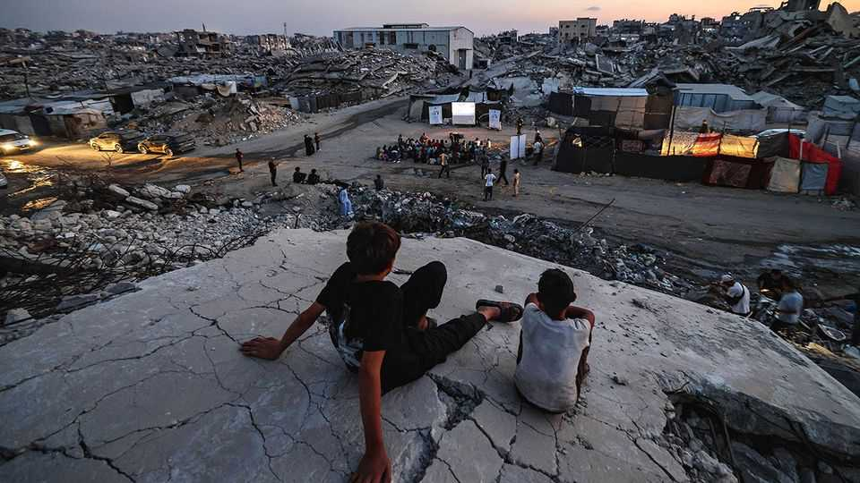

Jared Kushner has a $2.45bn recovery plan for Gaza
But the board of peace’s grand promises ring hollow in the strip

Oct 1st 2026
A year ago Donald Trump set up his Board of Peace (bop), a private club of world leaders. The day that he announced his plan for redevelopment in Gaza, to be overseen by the board, was, he claimed, “potentially one of the greatest days ever in civilisation”. The outfit has spent a year carrying out “intense preparation”, according to Tony Blair, a former British prime minister and member of the board’s executive. Now comes “the implementation”.
On September 23rd on the sidelines of the un General Assembly Jared Kushner, Mr Trump’s son-in-law and one of his main fixers, gave a sense of what the board hopes to spend on that implementation. He announced a $2.45bn recovery plan and talked of $71bn for a decade of reconstruction. The board would oversee 66 projects over the next six months alone, he declared. Power-point presentations promised a “connected, prosperous Gaza delivering Security, Dignity and Opportunity”.
Such promises ring hollow in Gaza. Israel has depopulated the nearly two-thirds of Gaza it occupies. Military outposts dot the strip. Herds of bulldozers level the rubble, erasing property boundaries and evidence of what some have judged to be war crimes. The first contours are emerging of what America says will be “alternative safe communities” for vetted Palestinians. Safe communities, reply hardline Israeli ministers, for Jewish settlers.
Israel bombs tents and the few houses still standing almost daily. It says it is pursuing the remaining leaders of Hamas, the Islamist group that broke out of Gaza and massacred Israelis three years ago. Over 1,400 people have been killed in the year since the ceasefire. Forget building new shelters ahead of winter. Heavy machinery to clear 68m tonnes of debris and to repair schools, hospitals, electricity and sanitation is banned on grounds of “dual use”. Even tent poles are forbidden.
Hamas remains the de facto authority. From bombed-out buildings it is still registering births and collecting sales taxes. But its hold is strained. In September Israel killed commanders in four of Gaza’s five governorates. To avoid being spotted by Israeli troops, police wear plain clothes.
Some warn of a descent into al-falatan al-amni, the security chaos that preceded the collapse of the Palestinian Authority in Gaza in the mid-2000s. Palestinian militias, backed by Israel, prey on Hamas. As the group’s rule frays, clans have returned to the streets, brandishing their weapons. Squabbles about jumping queues for bread and water end in gun battles. Mugging, once a rarity, is rife. Unable to provide for Gaza’s mass of orphans, relatives sell children for marriage. Some wives are as young as 12, said a recent un report. One man, said researchers, had married off his young daughter for two sacks of flour. “Gazans have lost our kindness,” says a Hamas civil servant. “We’ve grown cruel.”
In a warehouse the board set up a year ago in Kiryat Gat, an Israeli city 20km from Gaza, military personnel, spooks, diplomats and aid workers co-ordinate Gaza’s reconstruction with Israel. But the “initial momentum has stagnated”, says a Western official who spent months there. For all Mr Kushner’s talk of billions, funding for the board’s projects has fallen far short as Gulf donors have prioritised needs at home.
But the real obstacle, say officials working in Kiryat Gat, is Israel. The number of aid agencies in Gaza has fallen. The troops offered by five countries for the International Stabilisation Force to monitor the truce and oversee Israel’s withdrawal have not been allowed to enter. The National Committee for the Administration of Gaza, the Palestinian body appointed by the board to replace Hamas, is stuck in Egypt, as are 450 vetted Palestinian police officers. The board’s biggest effort to tackle hunger has been the canteen providing free buffets to staff in Kiryat Gat, quip officials, at a cost of $9m in six months (the price of about 1,800 community kitchens in Gaza). “The bop is always pandering to the Israelis,” says a Western official who visits frequently.
Some hope for change after Israel’s election on October 27th. But even if he is defeated Mr Netanyahu may cling on for months as caretaker, as Israel’s fragmented political parties jostle over forming a governing coalition. Moreover, the result might be another lurch to the right. Calls for “voluntary migration” of Palestinians, an Israeli euphemism for expulsion, are growing. One candidate, Moshe Feiglin, has said that every baby in Gaza is an enemy. Even more centrist contenders for prime minister share Mr Netanyahu’s view that Hamas must still be crushed.
Israel remains determined to do this militarily. In August Nickolay Mladenov, the board’s “high representative” in Gaza, persuaded the Islamists to agree to hand over their weapons in exchange for an Israeli withdrawal. Much in his plan was unclear. Would Hamas disarm before, in tandem with or after an Israeli withdrawal? Would its Palestinian adversaries disarm? Would Hamas give up light weapons as well as heavy ones? But Hamas was spared hard choices. Mr Netanyahu rejected the plan and a troop withdrawal. “Even if Hamas fully disarms, Israel would still claim it has a penknife,” says a European official.
Others are still trying to drag Hamas onto a political path. Given a green light from Mr Kushner, who has met its leaders, Muhammad Dahlan, a former warlord from Gaza who fought Hamas, is leading talks with the group in Cairo. His negotiators say he has persuaded Hamas to accept terms set by Mahmoud Abbas, the Palestinian president, for taking part in Palestinian elections in November. “We’ve been successful in changing Hamas’s minds,” claims Osama al-Fara, a former mayor in Gaza and an ally of Mr Dahlan. These include, he says, recognising Israel and accepting previous Palestinian agreements with it. This time, however, the spoiler may not be Israel. Fearing defeat, Mr Abbas is expected to cancel the elections. ■